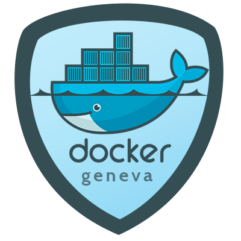

Sponsored by
Hortis
Bringing together


Ivan Hristov
Tech Lead @ Hortis

Docker Geneva User Group
{@DockerGeneva}
 @iv_hristov
@iv_hristov
 Blog: http://ingini.org
Blog: http://ingini.org

http://bit.ly/docker-maven-grunt

Virtualization & Collaboration
Docker Container


"My App and other layers"
-- The {Dev/Ops}
Source: Docker
Blog
Why not VMs?
App A
Bins/Libs
GuestOS
App B
Bins/Libs
GuestOS
Hypervisor
Host OS
Server
App A
Bins/Libs
App B
Bins/Libs
Docker Engine
Host OS
Server
VM
Docker container
Source: What is Docker?
Why devs dockerize?
- Portable
- Ease Integration Testing
- Boost your confidence
Why DevOps dockerize?
- Portable
- Standardized Env
- Easy scale-up or down
Why Companies dockerize?


The JavaScript Task Runner
n.
expert; connoisseur.
[1960–65; < Yiddish < Hebrew: connoisseur]
Source: http://thefreedictionary.com/
Q & A
 hristov.iv@gmail.com
@iv_hristov
ingini.org
hristov.iv@gmail.com
@iv_hristov
ingini.org
@DockerGeneva